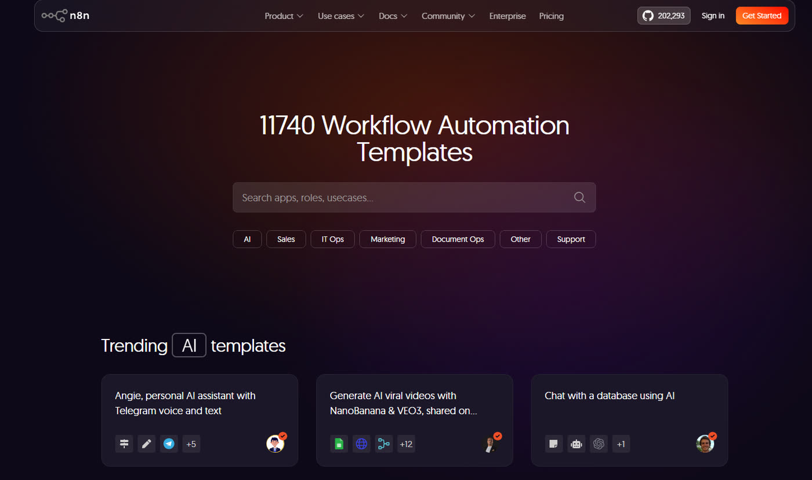

Rozdział 8
Rozdział 8. Sześć klocków, z których zbudujesz resztę
Przez siedem rozdziałów tego poradnika mogło ci się wydawać, że uczysz się programu o nazwie n8n - że lista rzeczy do zapamiętania rośnie z każdym kolejnym węzłem i za chwilę przestanie się mieścić w pamięci. Nie rosła. Poznałeś sześć rzeczy, które węzeł może zrobić z danymi - a wszystko, co zbudujesz od teraz, będzie już tylko ich kombinacją.
Monitor konkurencji z rozdziału 5, Syntezator researchu z rozdziału 6 i Panel strategiczny z rozdziału 7 wyglądają z daleka jak trzy różne maszyny. Z bliska każda z nich robi dokładnie to samo: coś pobiera, coś odsiewa, coś przekształca, o czymś decyduje, coś zapisuje albo wysyła, i zaczyna się to wszystko w konkretnej, wybranej przez ciebie chwili. Różnią się nie repertuarem ruchów, tylko proporcją, w jakiej po nie sięgają.
Co dokładnie kryje się pod każdym z tych sześciu słów?
Sześć klocków
Pobierz. „RSS Read" przyniósł nagłówki z sieci w rozdziałach 1, 3 i 5. „HTTP Request" w rozdziale 6 pobrał surową treść całej strony tam, gdzie nie było gotowego kanału RSS. „Google Sheets" w trybie odczytu, „Get row(s) in sheet", przyniósł w tym samym rozdziale listę adresów z twojego własnego arkusza. Kiedy dane wchodzą jako przesłany plik, nie link ani wiersz w arkuszu, pierwszym krokiem jest „Extract from File" z rozdziału 7. Cztery różne źródła, jedna funkcja. Skąd biorą się dane.
Odsiej. „Filter" w rozdziale 3 zostawił tylko tytuły zawierające słowo „AI". „IF" w rozdziale 5 rozdzielił ocenione przez model artykuły na te warte maila i te do pominięcia. Za każdym razem efekt jest ten sam: na wyjściu jest mniej elementów, niż weszło na wejściu, bo część z nich nie spełniła warunku. Zostaje mniej, niż przyszło.
Przekształć. „Markdown" w rozdziale 6 zamienił kod strony w czysty tekst, żeby zmieścić się w pamięci roboczej modelu. „Edit Fields" (Set) w rozdziale 7 wyciągnął z odpowiedzi modelu samo zdanie z tezą, odrzucając resztę. „Summarize" w rozdziałach 6 i 7 sklejał kilka osobnych elementów w jeden tekst, a „Merge" w rozdziale 7 zrobił coś pokrewnego z drugiej strony: złączył trzy oddzielne, równoległe strumienie w jeden, zanim jeszcze było co sklejać. Za każdym razem liczba elementów się nie zmienia albo zmienia się w ustalony, przewidywalny sposób. Tyle samo rzeczy, inny kształt.
Oceń. „Message a model", akcja węzła „OpenAI", pojawiła się po raz pierwszy w rozdziale 4 i wraca w każdym kolejnym: ocenia artykuł na TAK albo NIE w rozdziale 5, streszcza stronę i syntetyzuje sześć streszczeń w rozdziale 6, gra trzech strategów naraz i moderatora nad nimi w rozdziale 7. Jedyny klocek, który podejmuje decyzję zamiast wykonywać regułę - i jedyny, po którym to samo uruchomienie przepływu potrafi dwa razy z rzędu dać dwa różne wyniki.
Zapisz albo wyślij. „Gmail" wysłał efekt pracy przepływu do skrzynki w rozdziałach 3 i 5. „Google Sheets" w trybie zapisu, „Append row in sheet", dopisał wiersz do arkusza dwukrotnie w rozdziale 6, dla dwóch różnych rodzajów wyniku. „Convert to File" w rozdziale 7 zamienił tekst finalnej rekomendacji w gotowy do pobrania plik. Nie ma znaczenia, czy to mail, wiersz w tabeli, czy plik. Coś opuszcza przepływ.
Zdecyduj kiedy. „Manual trigger" czeka na twoje kliknięcie od rozdziału 1 i wraca w rozdziale 6, bo research robisz wtedy, kiedy akurat go potrzebujesz, nie codziennie o tej samej porze. „Schedule Trigger", poznany w rozdziale 3, ruszył naprawdę dopiero w rozdziale 5 - o stałej godzinie, bez twojego udziału. „Form Trigger" w rozdziale 7 czekał na przesłany plik, dostępny nie tylko dla ciebie, ale dla każdego, komu podasz adres formularza. Bez tego nic się nie zacznie.
| Klocek | Monitor konkurencji rozdział 5 | Syntezator researchu rozdział 6 | Panel strategiczny rozdział 7 |
|---|---|---|---|
| Zdecyduj kiedy | Schedule Trigger | Manual trigger | Form Trigger |
| Pobierz | RSS Read | Google Sheets (odczyt) HTTP Request | Extract from File |
| Odsiej | IF | — | — |
| Przekształć | — | Markdown Summarize | Edit Fields (Set) Merge, Summarize |
| Oceń | OpenAI ocena TAK/NIE | OpenAI (streszczenie) OpenAI (synteza) | OpenAI × 3 (stratedzy) OpenAI (moderator) |
| Zapisz albo wyślij | Gmail | Google Sheets (zapis) | Convert to File |
Gdzie szukać reszty
Sześć klocków nie oznacza jednak sześciu węzłów. n8n oferuje kilkaset gotowych węzłów dla konkretnych usług - każdy z nich to tylko wygodniejsza, uszyta pod jeden serwis wersja jednej z sześciu funkcji wyżej. Nie da się ich tu wymienić i nie warto próbować - taka lista zestarzeje się, zanim skończysz ją czytać. Zamiast katalogu przydadzą ci się trzy odruchy, które działają niezależnie od tego, jaki serwis akurat chcesz podłączyć.
Szukaj po nazwie usługi, nie po czynności. W polu wyszukiwania nad obszarem roboczym wpisujesz „Slack", nie „wyślij wiadomość na czat", tak samo jak wpisywałeś „Gmail", a nie „wyślij maila". Jeśli usługa ma swój węzeł, znajdziesz go w kilka sekund - dokładnie tak, jak znajdowałeś RSS Read, Google Sheets czy OpenAI.
Jak nie ma węzła, jest HTTP Request. Ten sam węzeł, którego użyłeś w rozdziale 6 do pobrania treści strony. Każda usługa, która ma dokumentację dla programistów, da się nim obsłużyć - wysyła zapytanie pod wskazany adres i odbiera odpowiedź, obojętnie czy adres należy do bloga, czy do systemu CRM. Nie jest to być może przyjemne, ale jest możliwe, i warto o tym wiedzieć, zanim uznasz, że czegoś się nie da zautomatyzować.
Gotowce, zanim zaczniesz. n8n prowadzi bibliotekę przepływów złożonych i udostępnionych przez innych użytkowników. Import działa tak samo jak w rozdziale 1: przeglądasz, wybierasz, wgrywasz do własnego konta. Warto tam zaglądać nie po to, żeby wziąć coś gotowego bez zastanowienia, tylko żeby zobaczyć, jak ktoś inny ułożył te same sześć klocków w zupełnie innym celu niż ty. Przykłady znajdziesz na: https://n8n.io/workflows/

Pięć kwestii, które warto zapamiętać
- Węzeł wykonuje się raz na każdy element, który do niego przyszedł.
- Węzeł przekazuje dalej to, co sam wyprodukował, nie to, co dostał.
- Model podejmuje decyzję, więc dwa uruchomienia mogą dać dwa różne wyniki.
- Nieaktywny przepływ nie uruchamia się z harmonogramu.
- Wszystko, co wysyłasz do modelu, kosztuje.
Zamknięcie
n8n nie jest trudne. Jest tylko obszerne. Trudność, jaką czujesz, patrząc na setki nazw węzłów w wyszukiwarce, bierze się z liczby nazw, nie z liczby pojęć. Pojęć jest sześć, i od tego rozdziału już je znasz.